Generated by ChatGPT on 2025-12-16
逐字稿下載：ChatGPT_zh_L10_第_10_講_Decoherence主題_10.txt
完整音檔：
Segment 1:
Segment 2:
Segment 3:
Segment 4:
Segment 5:
Segment 6:
Segment 7:
Segment 8:
Segment 9:
Segment 10:
Segment 11:
Segment 12:
Segment 13:
Segment 14:
本講作為本系列的第 10 講，聚焦於「退相干與量子測量」的幾個前沿與延伸主題，包括：
本講延續前幾講對退相干理論（尤其是環境誘導退相干）的數學架構，並將其與具體測量方案與資訊理論的限制結合，嘗試給出：退相干 = 環境對系統進行「隱性測量」 這件事在不同操作性脈絡中的具體形式。
在通用的開放量子系統框架裡，我們把環境 \(E\) 看作一個龐大的量子系統，與待測系統 \(S\) 耦合。量子測量可以視為「刻意設計」的 \(S\)–\(E\) 耦合，其中 \(E\) 是測量儀器（甚至包含人類或記錄設備）。令：
初始狀態： \[ \lvert \psi_S \rangle = \sum_i c_i \lvert s_i \rangle , \quad \lvert A_0 \rangle \in \mathcal{H}_A \] 測量相互作用實現一個單位算符 \(U_{SA}\)，使得： \[ U_{SA}\colon \lvert s_i \rangle \lvert A_0 \rangle \mapsto \lvert s_i \rangle \lvert A_i \rangle . \] 因此一般疊加態演化為： \[ \lvert \psi_S \rangle \lvert A_0 \rangle \;\xrightarrow{U_{SA}}\; \sum_i c_i \lvert s_i \rangle \lvert A_i \rangle . \]
若只看系統密度矩陣 \(\rho_S = \operatorname{Tr}_A \rho_{SA}\)，則： \[ \rho_{SA} = \bigl( \sum_i c_i \lvert s_i \rangle \lvert A_i \rangle \bigr) \bigl( \sum_j c_j^* \lvert s_j \rangle \langle A_j \rvert \bigr)^\dagger , \] \[ \rho_S = \operatorname{Tr}_A \rho_{SA} = \sum_{i,j} c_i c_j^* \lvert s_i \rangle \langle s_j \rvert \langle A_j \vert A_i \rangle . \] 若 \(\{\lvert A_i \rangle\}\) 迅速成為近乎正交（因為與更大環境耦合），則 \(\langle A_j \vert A_i \rangle \approx \delta_{ij}\)，退相干出現： \[ \rho_S \approx \sum_i |c_i|^2 \lvert s_i \rangle \langle s_i \rvert, \] 這就是前幾講反覆強調的「測量 = 退相干 + 結果讀出」的核心圖像。
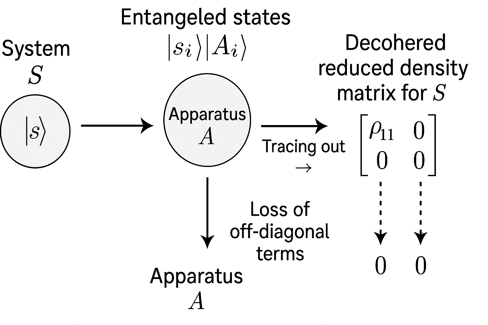
|A_i>, and then tracing out A to obtain a decohered reduced density matrix for S; arrows illustrating the loss of off-diagonal terms.">Bohm 在其對量子測量的討論中，強調把系統與測量儀器視為一個整體量子系統 \(S + A\)。在此圖像中，退相干機制就是 \(A\) 與其外部環境 \(E\) 的耦合所導致的相位信息丟失。
考慮三方系統 \(\mathcal{H}_S \otimes \mathcal{H}_A \otimes \mathcal{H}_E\)：
系統–儀器的聯合密度矩陣為： \[ \rho_{SA} = \operatorname{Tr}_E \Bigl( \sum_{i,j} c_i c_j^*\, \lvert s_i,A_i,E_i \rangle \langle s_j,A_j,E_j \rvert \Bigr) = \sum_{i,j} c_i c_j^* \lvert s_i,A_i \rangle \langle s_j,A_j \rvert \underbrace{\langle E_j \vert E_i \rangle}_{\to \delta_{ij}} . \]
若 \(\langle E_j \vert E_i \rangle \approx \delta_{ij}\)，則： \[ \rho_{SA} \approx \sum_i |c_i|^2 \lvert s_i,A_i \rangle \langle s_i,A_i \rvert , \] 實現了 pointer basis \(\{\lvert A_i \rangle\}\) 的選擇與經典化。Bohm 強調的是：不需要引入「波函數崩塌」作為額外公設，退相干+有效經驗論可解釋測量結果的誕生。在實務上，這個圖像與現代量子達西互動、量子控制論的模型是一致的。
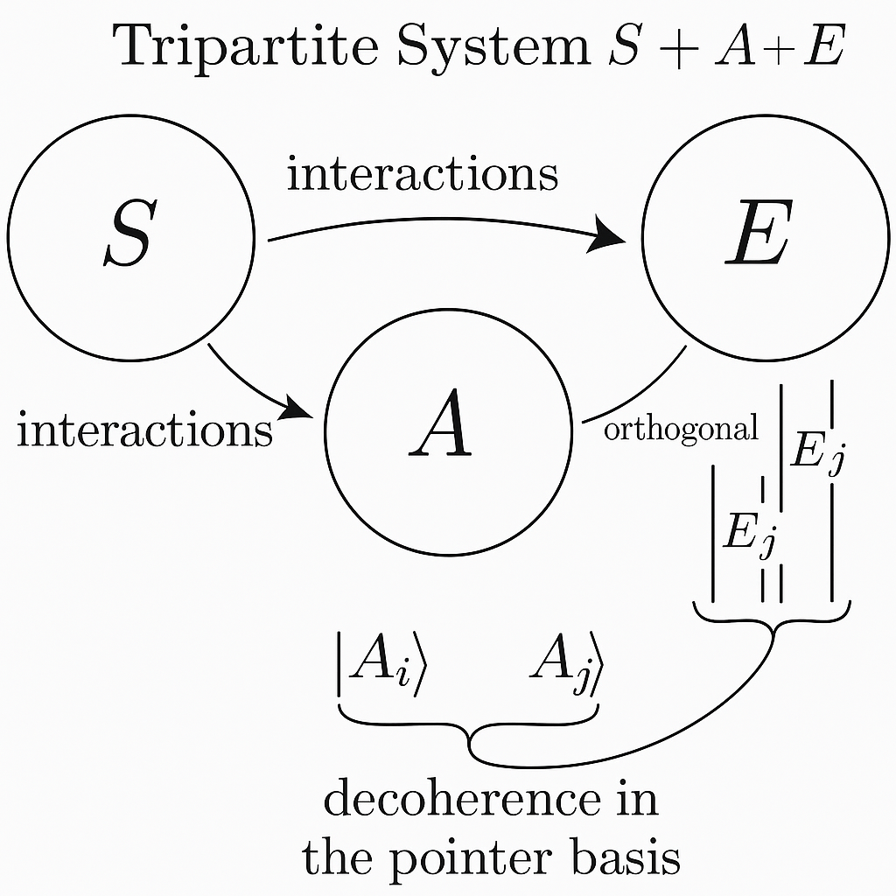
becoming orthogonal and leading to decoherence in the pointer basis |A_i>.">任一符合量子力學的測量過程，可用一組 Kraus 算符 \(k\)，也就是一族 \(M_k\) 的集合。-->\(\{M_k\}\) 表示，滿足： \[ \sum_k M_k^\dagger M_k = \mathbb{I}. \] 對初始系統密度矩陣 \(\rho\)，得到結果 \(k\) 的機率為： \[ p_k = \operatorname{Tr}(M_k \rho M_k^\dagger), \] 條件後驗狀態為： \[ \rho_k = \frac{M_k \rho M_k^\dagger}{p_k}. \]
不條件地（忽略結果）看系統的演化： \[ \rho \mapsto \mathcal{E}(\rho) = \sum_k M_k \rho M_k^\dagger , \] 這是一個 CPTP map（completely positive trace-preserving map）。若 \(k\)，也就是一族 \(M_k\) 的集合。-->\(\{M_k\}\) 導致 off-diagonal terms 消失或衰減，即實現退相干。
若測量對應於正算符集合 \(\{E_k\}\)，其中： \[ E_k = M_k^\dagger M_k, \quad E_k \ge 0, \quad \sum_k E_k = \mathbb{I}, \] 則 \(\{E_k\}\) 是一組 POVM（positive operator-valued measure）。這是現代量子測量理論的標準形式。
射影測量（projective measurement）是特殊情況，令 \(P_i\)，也就是一組 \(P i\) 的集合。-->\(\{P_i\}\) 為一組正交投影，滿足： \(P_i\) 的平方等於 \(P_i\) 本身； \(P_i\) 乘上 \(P_j\) 等於零，當 \(i\) 不等於 \(j\) 的時候； 所有的 \(P_i\) 加總起來，等於單位算符。-->\[ P_i^2 = P_i,\quad P_i P_j = 0\ (i\neq j),\quad \sum_i P_i = \mathbb{I}. \] 對 \(\rho\) 執行「未知結果」的射影測量（即只看測量後總體狀態），對應的 Kraus 集合為 \(P\) 下標 \(i\)。-->\(\{M_i = P_i\}\)，所以： \[ \mathcal{E}(\rho) = \sum_i P_i \rho P_i. \]
若在 \(P_i\) 的共同本徵基底 \(\{\lvert i \rangle\}\) 下展開 \(\rho\)： \[ \rho = \sum_{i,j} \rho_{ij} \lvert i \rangle \langle j \rvert, \] 則 \[ \mathcal{E}(\rho) = \sum_i P_i \Bigl(\sum_{j,k} \rho_{jk} \lvert j \rangle \langle k \rvert \Bigr) P_i = \sum_i \sum_{j,k} \rho_{jk} P_i \lvert j \rangle \langle k \rvert P_i. \] 由於 \(P_i \lvert j \rangle = \delta_{ij} \lvert i \rangle\)，得到： \[ \mathcal{E}(\rho) = \sum_i \sum_{j,k} \rho_{jk} \delta_{ij} \delta_{ik} \lvert i \rangle \langle i \rvert = \sum_i \rho_{ii} \lvert i \rangle \langle i \rvert . \] 可見所有 \(i \neq j\) 的非對角項全部被消除了，這就是「測量造成完全退相干」的標準數學表現。
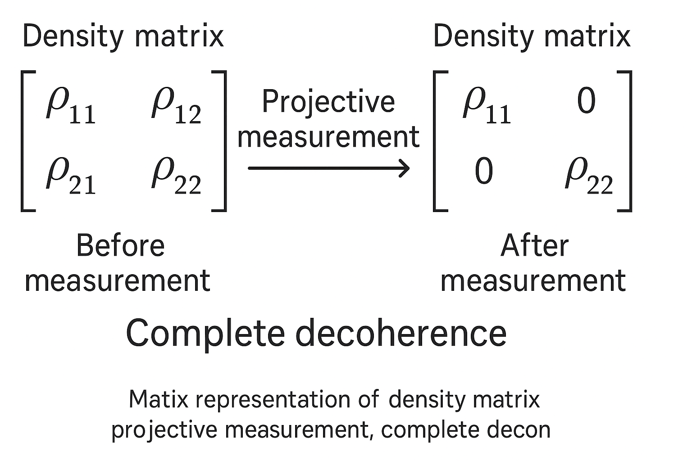
若測量不是瞬間的，而是持續弱耦合進行，可用 Lindblad 主方程描述。設被連續監測的可觀察量為 \(A\)，測量導致的退相干可近似為： \[ \frac{d\rho}{dt} = -i[H,\rho] - \frac{\gamma}{2}\bigl(A^2 \rho + \rho A^2 - 2 A \rho A \bigr), \] 其中 \(\gamma\) 測量強度。將 \(\rho\) 展開在 \(A\) 的本徵基底 \(\{\lvert a_n \rangle\}\) 中，可見 off-diagonal 隨時間指數衰減： \[ \frac{d}{dt} \rho_{mn} = -i\omega_{mn} \rho_{mn} - \frac{\gamma}{2}(a_m - a_n)^2 \rho_{mn}, \] \[ \rho_{mn}(t) = \rho_{mn}(0) \exp\Bigl[-i\omega_{mn} t - \frac{\gamma}{2}(a_m - a_n)^2 t\Bigr]. \] 這與「測量強度越大，退相干越快」的物理直覺一致，也與量子 Zeno effect 有深刻關聯。
弱測量（weak measurement）思想：讓系統與測量裝置的耦合非常小，使得一次測量只能獲得少量資訊，而對系統造成的擾動也相應很小。數學上，考慮測量可觀察量 \(A\) 的 von Neumann 型耦合： \[ H_{\text{int}} = g(t)\, A \otimes P, \] 其中 \(P\) 是指針的動量算符，滿足 \([Q,P]=i\)，\(Q\) 是指針的位置。令 \[ \int g(t)\, dt = g \ll 1, \] 則單位時間演化近似為： \[ U \approx e^{-i g A \otimes P} \approx \mathbb{I} - i g A \otimes P + O(g^2). \]
若指針初態為高斯波包 \(\lvert \phi_0 \rangle\)，且只測一次，系統狀態只被弱擾動； 為獲得可觀統計，需要對大量同樣制備的系統重複測量平均。 這種測量實現了「平均而言稍微得知 \(A\) 的期望值，而單個系統受到的退相干有限」。
在 post-selection（後選）情境下，可定義著名的「弱值」： \[ A_w = \frac{\langle \psi_f \vert A \vert \psi_i \rangle}{\langle \psi_f \vert \psi_i \rangle}, \] 指針位置的平均位移與 \(\operatorname{Re}(A_w)\) 成正比。弱值可存在於本徵值譜之外，是當代量子基礎研究的重要工具。
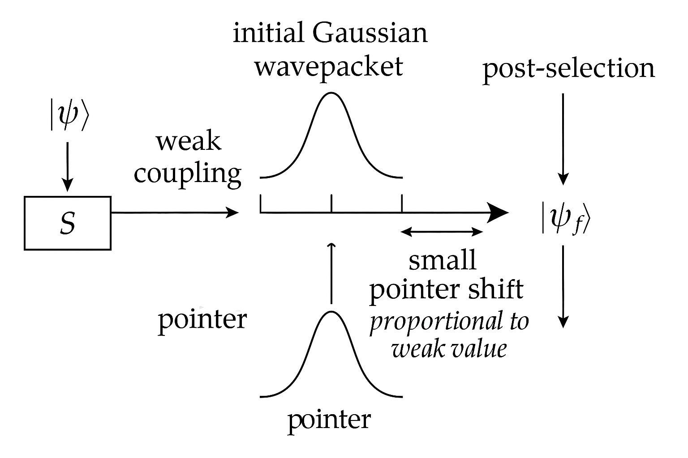
, illustrating small pointer shift proportional to weak value.">Quantum non-demolition (QND) measurement 為在不改變目標可觀察量本徵值的情況下重複測量同一物理量，使得第一次測得值在之後仍然有效。典型條件是：
總哈密頓量： \[ H_{\text{tot}} = H_S + H_A + H_{\text{int}}, \quad [A, H_{\text{tot}}]=0, \] 則在任意時間 \(t\) 有： \[ \frac{dA}{dt} = i[H_{\text{tot}},A] = 0 \Rightarrow A(t)=A(0). \] 在此情況下，測量 會 對系統其他自由度造成退相干或坍縮（例如相位信息），但 不 破壞 \(A\) 的本徵值分佈。這使得 QND 測量成為重複讀取同一物理量（例如光子數、機械振子能階）的關鍵技術。
以測量光子數算符 \(n=a^\dagger a\) 為例，若 \[ H_S = \omega a^\dagger a, \quad H_{\text{int}} = \chi a^\dagger a \otimes \sigma_z, \] 則 \([n,H_S]=[n,H_{\text{int}}]=0\)，光子數為 QND 量。測量表現為相位擴展與退相干，但光子數統計保持。
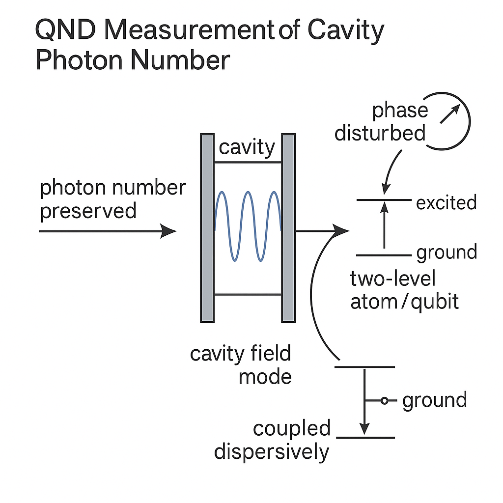
一個重要觀察：弱測量與 QND 測量並非「不退相干」，而是把退相干限制在特定自由度或以緩慢速率發生。例如：
這正是「information-gain–disturbance tradeoff」的具體例證：你越想精確知道 \(A\)，就必然在與 \(A\) 不對易的方向上付出代價。
information-gain–disturbance tradeoff 指：測量觀察到的資訊量，與對系統狀態造成的擾動程度之間存在不可逾越的權衡。數學上可採用多種量化方式，常見的是：
對於純態 \(\lvert \psi \rangle\)，保真度簡化為： \[ F(\lvert \psi \rangle\langle\psi|, \rho') = \langle \psi \vert \rho' \vert \psi \rangle, \] 用以衡量測量前後狀態的「相似度」。
考慮最簡單情況：二維希爾伯特空間 \(\mathcal{H}_2\)，測量一個二元可觀察量，例如 \(\sigma_z\) 方向的資訊。設系統初始純態： \[ \lvert \psi \rangle = \alpha \lvert 0 \rangle + \beta \lvert 1 \rangle, \quad |\alpha|^2+|\beta|^2=1. \]
設計一組連續參數的 POVM： \[ M_0 = \sqrt{1-\lambda}\, \lvert 0 \rangle\langle 0| + \sqrt{\lambda}\, \lvert 1 \rangle\langle 1|, \] \[ M_1 = \sqrt{\lambda}\, \lvert 0 \rangle\langle 0| + \sqrt{1-\lambda}\, \lvert 1 \rangle\langle 1|, \] 其中 \(0\le \lambda \le \tfrac{1}{2}\) 控制測量強度。驗證： \[ M_0^\dagger M_0 + M_1^\dagger M_1 = \mathbb{I}. \]
不條件後測量（忽略結果），系統狀態變為： \[ \rho' = \sum_{k=0}^1 M_k \lvert\psi\rangle\langle\psi| M_k^\dagger. \] 具體計算：首先， \[ M_0 \lvert \psi \rangle = \sqrt{1-\lambda}\,\alpha \lvert 0 \rangle + \sqrt{\lambda}\,\beta \lvert 1 \rangle, \] \[ M_1 \lvert \psi \rangle = \sqrt{\lambda}\,\alpha \lvert 0 \rangle + \sqrt{1-\lambda}\,\beta \lvert 1 \rangle. \]
則 \[ \rho' = M_0 \lvert\psi\rangle\langle\psi| M_0^\dagger + M_1 \lvert\psi\rangle\langle\psi| M_1^\dagger. \] 把 \(\rho'\) 的矩陣元寫出，可得對角元不變（因為此測量只是抽取關於 \(\sigma_z\) 的資訊）： \[ \rho'_{00} = |\alpha|^2,\quad \rho'_{11}=|\beta|^2. \] 而非對角元： \[ \rho'_{01} = \alpha \beta^* \bigl[(1-\lambda) + \lambda + \lambda + (1-\lambda)\bigr]/2 \quad\text{(註：實際計算需逐步展開)}, \] 更嚴謹的做法是直接計算： \[ \rho' = \begin{pmatrix} |\alpha|^2 & \alpha\beta^* (1-2\lambda) \\ \alpha^*\beta (1-2\lambda) & |\beta|^2 \end{pmatrix}. \] 可見 off-diagonal 被乘上一因子 \((1-2\lambda)\)，當 \(\lambda=\tfrac{1}{2}\) 時，完全退相干。
對於擾動程度，可以計算保真度： \[ F = \langle \psi \vert \rho' \vert \psi \rangle = |\alpha|^4 + |\beta|^4 + 2|\alpha|^2|\beta|^2 (1-2\lambda). \] 當 \(\lambda\) 越接近 \(1/2\)，保真度越下降。另一方面，這個 POVM 能夠區分 \(\lvert 0 \rangle\) 與 \(\lvert 1 \rangle\) 的能力隨 \(\lambda\) 增強。以經典互資訊 \(I(X:Y)\) 表示可知：
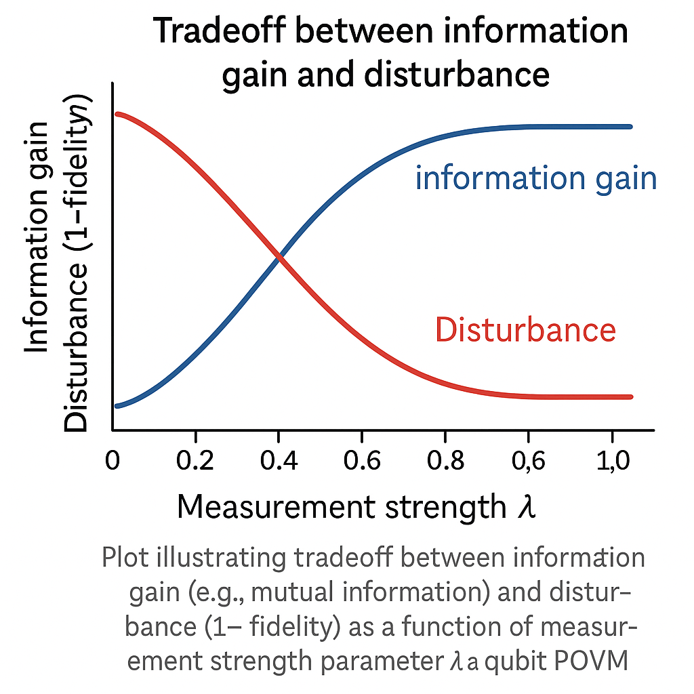
一個關鍵定理：對未知純態集合 \(\{\lvert\psi\rangle\}\) 執行非平凡測量（即確實區分某些狀態），若對每一個 \(\lvert\psi\rangle\) 都要求 \(\rho' = \lvert\psi\rangle\langle\psi|\)，則測量必定是平凡的（等價於單位演化，無資訊獲取）。這可用 Wigner theorem 或 no-cloning 類論證展示。
直覺上：若你能在不擾動未知態的情況下區分其屬於不同子集，那你可以反覆使用這個測量裝置，在無限多個輸出上複製出關於 \(\lvert\psi\rangle\) 的資訊，與 no-cloning theorem 衝突。因此，對未知量子態判別與複製不可兼得，對應到信息–擾動 tradeoff 的根本限制。
Elitzur 和 Vaidman（1993）提出的炸彈測試器，是「無交互測量」的首個鮮明例子。問題敘述：
基本裝置為 Mach–Zehnder 干涉儀：光子在兩個路徑 \(\lvert u \rangle\)、\(\lvert l \rangle\) 間建立疊加，最後在兩個輸出端進行干涉。若無炸彈，干涉可被設計成讓一個探測器永遠不亮。
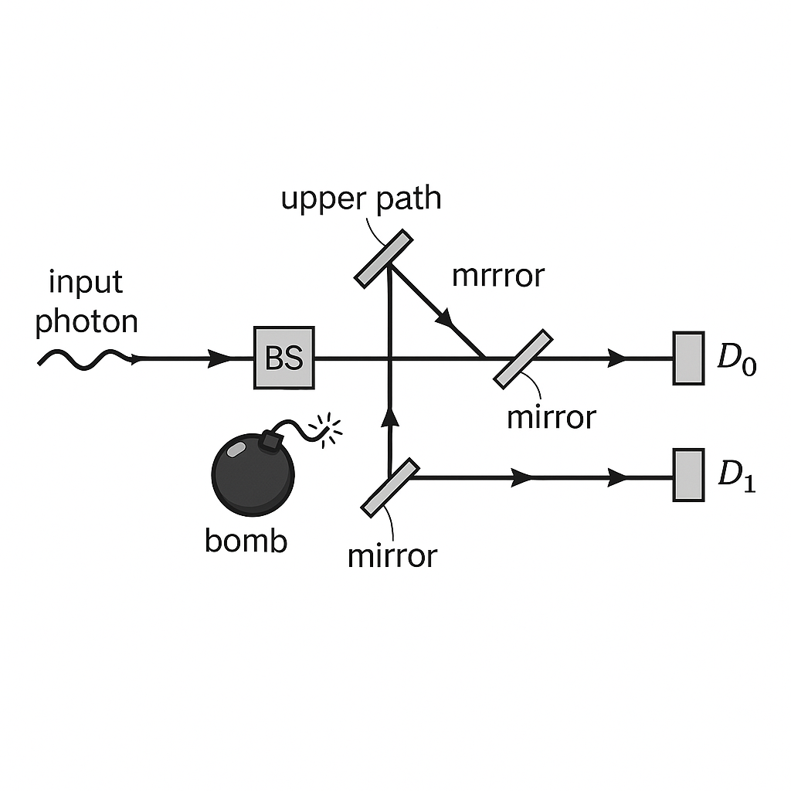
設第一個 50/50 分束器 \(BS_1\) 作用為： \[ \lvert \text{in} \rangle \to \frac{1}{\sqrt{2}}\bigl(\lvert u \rangle + i\lvert l \rangle\bigr), \] 兩個路徑經過同相位路徑，到達第二個 50/50 分束器 \(BS_2\)。在 \(BS_2\) 上： \[ \lvert u \rangle \to \frac{1}{\sqrt{2}}(\lvert D_0 \rangle + i\lvert D_1 \rangle),\quad \lvert l \rangle \to \frac{1}{\sqrt{2}}(i\lvert D_0 \rangle + \lvert D_1 \rangle). \]
總演化： \[ \lvert \text{in} \rangle \xrightarrow{BS_1} \frac{1}{\sqrt{2}}(\lvert u \rangle + i\lvert l \rangle) \xrightarrow{BS_2} \frac{1}{\sqrt{2}}\left[ \frac{1}{\sqrt{2}}(\lvert D_0 \rangle + i\lvert D_1 \rangle) + i\frac{1}{\sqrt{2}}(i\lvert D_0 \rangle + \lvert D_1 \rangle) \right]. \] 整理： \[ = \frac{1}{2}\left[ \lvert D_0 \rangle + i\lvert D_1 \rangle - \lvert D_0 \rangle + i\lvert D_1 \rangle \right] = i\lvert D_1 \rangle. \] 因此所有光子必然在 \(D_1\) 被探測到，\(D_0\) 永遠不亮。
若在下路徑 \(\lvert l \rangle\) 放置可能爆炸的炸彈（假設一旦炸彈是好的且光子走此路徑就必然爆炸），則在 \(BS_1\) 後： \[ \frac{1}{\sqrt{2}}(\lvert u \rangle + i\lvert l \rangle) \] 的 \(\lvert l \rangle\) 分量要麼導致炸彈爆炸（探測事件），要麼（在考慮「未爆炸」條件下）被捨棄。從「條件於未爆炸」的觀點，光子狀態投影到 \(\lvert u \rangle\)。
因此，在沒爆炸的情況（條件事件）下，第二個分束器收到的是純粹 \(\lvert u \rangle\)： \[ \lvert u \rangle \xrightarrow{BS_2} \frac{1}{\sqrt{2}}(\lvert D_0 \rangle + i\lvert D_1 \rangle). \] 所以在「炸彈存在且未爆炸」的子集合中，光子有 \(1/2\) 機率在 \(D_0\) 被探測到。
整體機率分析（假設炸彈是「好」的）：
若在 \(D_0\) 上偵測到光子，就可以斷言「存在一顆好炸彈在干涉路徑中」，因為：
因此，在 不引爆炸彈 的情況下，我們獲得了炸彈是「好」的這條資訊。這就是「interaction-free」的語義：物理上並沒有真正在時間演化中發生吸收互動，但卻獲得了關於該互動可能性的資訊。
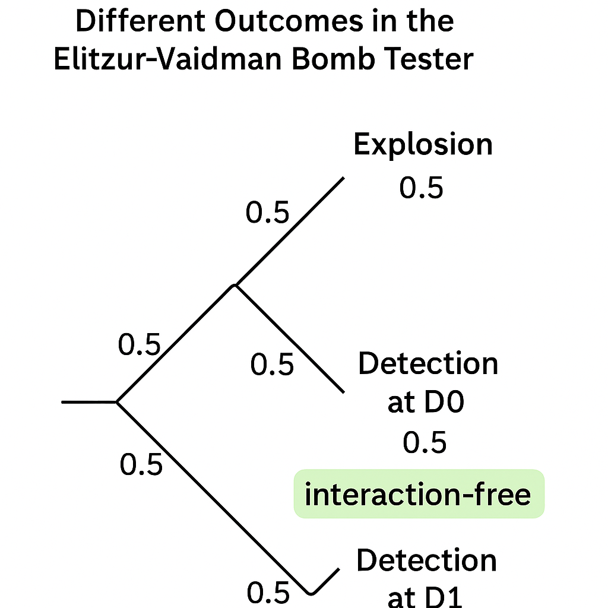
從退相干的角度看：炸彈作為「測量裝置」，測量「光子是否經過下路徑 \(\lvert l \rangle\)」。即使條件於炸彈未爆炸，環境態（包括炸彈內部自由度）已經和路徑信息糾纏，導致路徑間相干被部分或完全破壞。
形式化描述：將路徑態與炸彈態寫作： \[ \lvert u \rangle \lvert B_0 \rangle \to \lvert u \rangle \lvert B_u \rangle, \quad \lvert l \rangle \lvert B_0 \rangle \to \begin{cases} \lvert \text{explosion} \rangle & (\text{good bomb}) \\ \lvert l \rangle \lvert B_l \rangle & (\text{bad bomb}) \end{cases}. \] 對好炸彈而言，條件未爆炸就意味著系統被投影到 \(\lvert u \rangle\)；對壞炸彈而言，\(\lvert B_u \rangle = \lvert B_l \rangle\)，保持相干。
因此 EV 裝置同時體現：
Elitzur–Vaidman 原始方案中，成功率（在不爆炸情況下辨認好炸彈）最大為 \(1/4\)。後續 Kwiat 等人提出利用多次干涉與量子 Zeno 效應將成功率提升到接近 1。
核心想法：將兩路徑間的分束器替換為「小角度旋轉」並多次重複。設在偏振空間中的兩個態： \[ \lvert H \rangle, \quad \lvert V \rangle, \] 與一個小旋轉： \[ R(\theta) = \begin{pmatrix} \cos\theta & -\sin\theta \\ \sin\theta & \cos\theta \end{pmatrix}. \]
若沒有炸彈，經過 \(N\) 次旋轉，總旋轉角為 \(N\theta\)。選擇 \(N\theta = \pi/2\)，使得 \(\lvert H \rangle \to \lvert V \rangle\)。若有炸彈放在 \(\lvert V \rangle\) 通道（吸收 \(\lvert V \rangle\) 光子，準確地講是相當於頻繁的投影測量），則每一步中 \(\lvert V \rangle\) 分量被「檢查」並可能吸收，導致系統在 Zeno 效應下被凍結在 \(\lvert H \rangle\)。
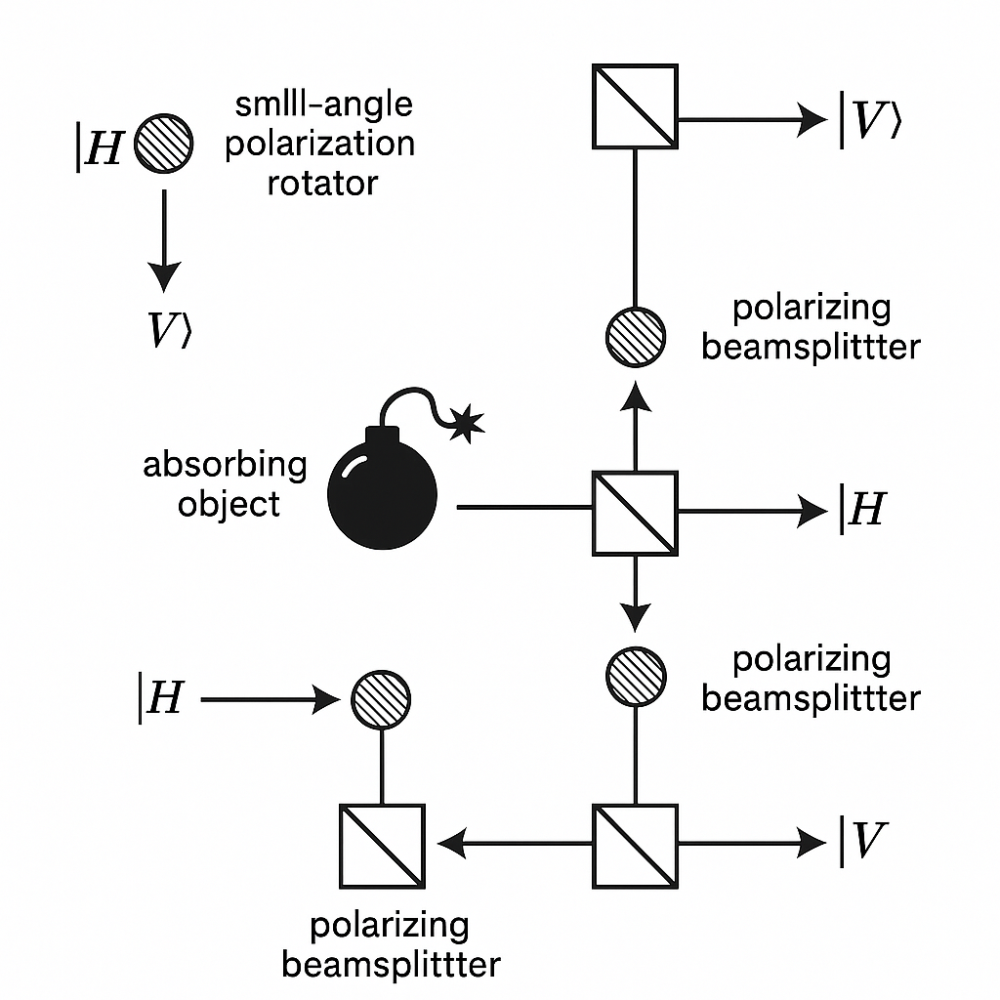
定量分析：假設每一步中有：
在第 \(k\) 步後，若光子尚未被吸收，其狀態必為某種係數 \(a_k\lvert H \rangle\)。由於每一步旋轉很小，\(\lvert V \rangle\) 分量立即被「測量」並（在未爆炸條件下）刪除，相當於： \[ \lvert H \rangle \xrightarrow{\text{1 step with Zeno}} \sqrt{1 - \sin^2\theta}\, \lvert H \rangle = \cos\theta\, \lvert H \rangle. \] 因此經過 \(N\) 步後，在「沒爆炸」條件下，狀態為： \[ \lvert \psi_N \rangle = \cos^N\theta\, \lvert H \rangle. \]
光子未被吸收（炸彈未爆炸）的總機率為： \[ P_{\text{no explosion}} = |\cos^N\theta|^2 = \cos^{2N}\theta. \] 若取 \(\theta = \pi/(2N)\)，則當 \(N \to \infty\)： \[ \cos\theta \approx 1 - \frac{\theta^2}{2} = 1 - \frac{\pi^2}{8N^2}, \] \[ \cos^{2N}\theta \approx \left(1 - \frac{\pi^2}{8N^2}\right)^{2N} \approx \exp\left(-\frac{\pi^2}{4N}\right) \to 1 \quad (N \to \infty). \] 因此炸彈不爆炸的機率趨近 1。
另一方面，若 不存在炸彈，則系統單純接受 \(N\) 次旋轉： \[ \lvert H \rangle \xrightarrow{N\theta = \pi/2} \lvert V \rangle. \] 因此：
成功無交互辨認好炸彈的機率隨 \(N\) 增大趨近 1，這是利用量子 Zeno 效應多次「弱量測」幾乎完全阻止狀態旋轉的精美應用。
反事實量子計算（counterfactual quantum computation）提出：在某些干涉式量子電路中，可以在 計算機實際沒有被「執行」的路徑 下，仍然獲得有關計算結果的資訊。
典型思想：將「是否執行計算」視作一個路徑選擇，利用干涉結構（類似 Kwiat IFM 裝置），使得某些干涉結果 只可能出現在「沒有執行計算」的歷史路徑中。因此一旦觀察到這種結果，就可反推計算結果，而斷言「計算機沒有真正運行」。
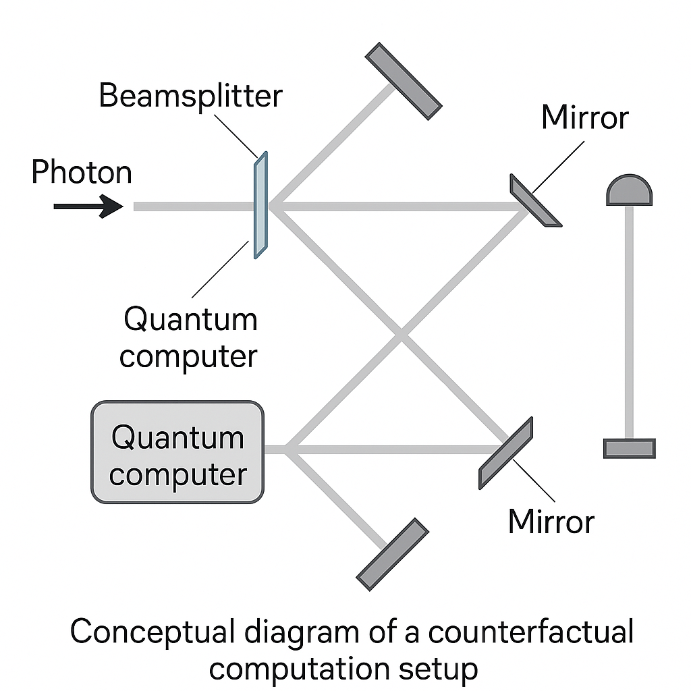
假設有一個量子計算裝置 \(U_f\)，實現經典布林函數 \(f\colon \{0,1\}^n \to \{0,1\}\)。簡化到一個 bit 的情況，目標是知道 \(f(0)\in\{0,1\}\)。把「是否運行 \(U_f\)」當成控制量，與路徑 \(\lvert u \rangle, \lvert l \rangle\) 糾纏：
藉由多次小角度干涉與 Zeno 效應，可以設計使得在某一終態探測器點亮時，路徑分解中 \(\lvert l \rangle\) 分量 幾乎沒有被訪問，而仍然對總體相位作出微妙的影響。這種機制類似前述 Kwiat 方案，只是「炸彈」被替換為「計算機」。
形式上，對於每一步（小迭代）： \[ \lvert \psi_k \rangle = a_k \lvert \text{no run} \rangle + b_k \lvert \text{run} \rangle, \] 在「run」通道中套用 \(U_f\)。透過適當的控制與後選，在某一測量結果條件下可推演 \(f(0)\) 的值，而量子幅 \(b_k\) 被保持極小，使得在動力學上「計算機被實際調用」的歷史路徑機率趨近 0。
反事實量子計算看似「違反」資訊–擾動 tradeoff，因為獲得了關於 \(U_f\) 輸出的資訊，卻宣稱幾乎沒有對其執行任何操作。但若從全系統演化來看，其實 tradeoff 並未被破壞：
爭議點多在於：何謂「未被運行」？從 path-integral 或多世界詮釋角度，會有不同解讀。就操作論而言，只要在統計上計算機被實際執行的次數趨近 0，就有理由稱其為「反事實運行」。
現代量子科技在實驗上已能顯著操控退相干與測量型態，例如：
這些技術展現了：退相干不再只是「噪音」，而是可以被設計與利用的資源，用於：
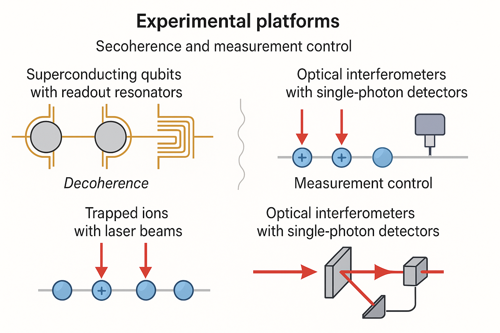
在量子基礎方面，退相干理論已被廣泛接受為：
然而，它 並未 解決：
於是不同詮釋（如多世界詮釋、Bohmian 力學、QBism、GRW 崩塌模型）都把退相干納入自身架構，例如：
在更廣泛的量子資訊與重力結合場景中，information-gain–disturbance tradeoff 和退相干的角色仍充滿未解謎團，例如：
這些領域需要把本講所述的測量理論、退相干機制、IFM 和反事實計算等概念進一步推廣到更高階且非平凡的時空與因果結構中。
推薦進一步閱讀：